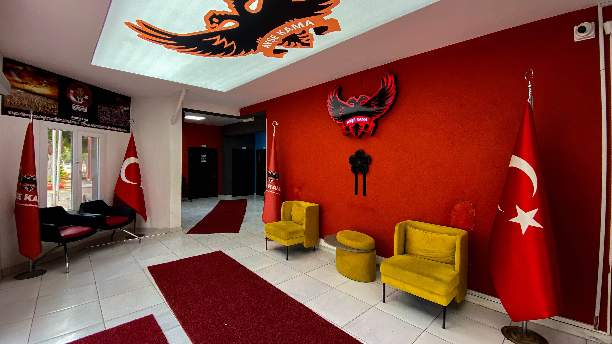
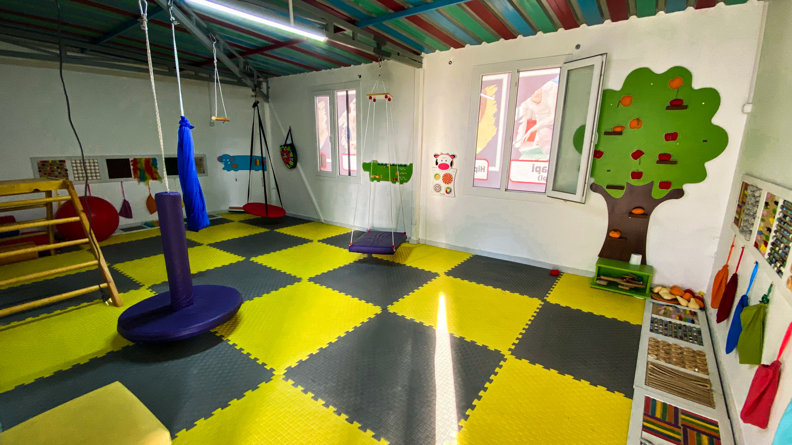
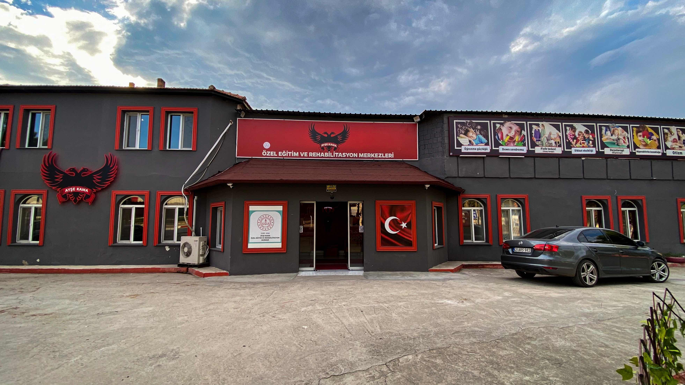

HAKKIMIZDA



Ayşe Kama Özel Eğitim ve Rehabilitasyon Merkezi olarak, özel eğitime ihtiyaç duyan öğrencilerimizin bireysel gelişimlerini desteklemek ve onları hayata en iyi şekilde hazırlamak amacıyla hizmet vermekteyiz. Merkezimizdeki en temel hedefimiz, her bireyin kendi potansiyelini en üst düzeyde gerçekleştirmesini sağlamaktır. Bu doğrultuda, öğrencilerimizin ebeveynlerinden bağımsız olarak sosyal hayata uyum sağlamalarını, kendi başlarına karar verebilmelerini ve toplum içinde aktif, üretken bireyler olarak yer almalarını hedefliyoruz.
Özel eğitim ve rehabilitasyon merkezleri, sadece akademik başarıya odaklanmaz; öğrencilerin sosyal, duygusal, fiziksel ve bilişsel alanlardaki gelişimlerini bütüncül bir yaklaşımla destekler. Biz de bu çerçevede, öğrencilerimizin sadece eğitim hayatında değil, günlük yaşam becerilerinde de güçlenmelerini sağlayacak bireyselleştirilmiş eğitim planları sunuyoruz. Her öğrencinin ihtiyaçları farklı olduğu için, eğitim programlarımızı onların güçlü ve gelişmesi gereken yönlerine göre düzenliyoruz. Böylece öğrencilerimizin, hayatın her alanında bağımsız ve kendine güvenen bireyler olarak var olmalarını amaçlıyoruz.
Rehabilitasyon merkezimizde, öğrencilerimizin özgüvenlerini artırmaya ve sosyal becerilerini geliştirmeye büyük önem veriyoruz. Amacımız, onların sosyal ilişkiler kurabilmelerini, toplumsal kurallara uyum sağlayabilmelerini ve yaşamlarını kendi başlarına sürdürebilmeleri için gerekli becerileri kazanmalarını sağlamaktır. Bu süreçte, öğretmenlerimiz ve uzman kadromuz, öğrencilerimizle bire bir ilgilenerek onların kişisel gelişimlerine en uygun eğitim yaklaşımlarını uygulamaktadır.
Ayrıca, Ayşe Kama Özel Eğitim ve Rehabilitasyon Merkezi olarak, öğrencilerimizin fiziksel ve motor becerilerini geliştirmek adına çeşitli terapiler ve aktiviteler sunuyoruz. Fiziksel gelişimin, öğrencilerin genel yaşam kalitesine katkı sağladığını biliyor ve bu alanda da yoğun bir çalışma yürütüyoruz. Rehabilitasyon hizmetlerimizle, öğrencilerimizin bedensel sağlığını iyileştirmenin yanı sıra, onların sosyal çevrelerinde daha aktif bireyler olmalarını teşvik ediyoruz.
Kurum olarak, öğrencilerimizin sadece bugünkü ihtiyaçlarına değil, gelecekteki yaşamlarına da hazırlanmalarını önemsiyoruz. Onların yaşam boyu öğrenmeye açık, kendi ayakları üzerinde durabilen ve topluma katkı sağlayan bireyler olmaları için çalışıyoruz. Her bir öğrencimizin başarılı, mutlu ve bağımsız bir yaşam sürmesi için tüm kaynaklarımızı ve uzmanlığımızı seferber ediyoruz. Bu doğrultuda, Ayşe Kama Özel Eğitim ve Rehabilitasyon Merkezi, her öğrencisinin yanında olmaktan gurur duymakta ve onların yaşamlarında bir fark yaratmayı amaçlamaktadır.
Toplumun her kesimiyle iş birliği yaparak, öğrencilerimizin sosyal hayata katılımlarını artırmayı ve onların toplum tarafından kabul görmüş bireyler olarak yetişmelerine katkıda bulunmayı hedefliyoruz. Eğitim, terapi ve sosyal aktiviteler aracılığıyla, onların kendilerini en iyi şekilde ifade edebilmelerine ve hayatta karşılaşabilecekleri zorluklarla başa çıkabilmelerine yardımcı oluyoruz. Ayşe Kama Özel Eğitim ve Rehabilitasyon Merkezi olarak, bu hedeflere ulaşmak için büyük bir özveriyle çalışmaya devam ediyoruz.


